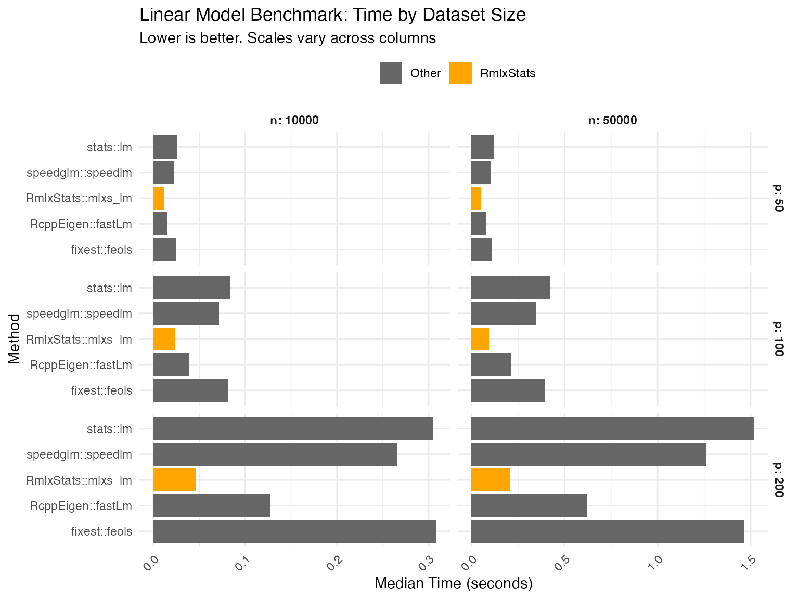
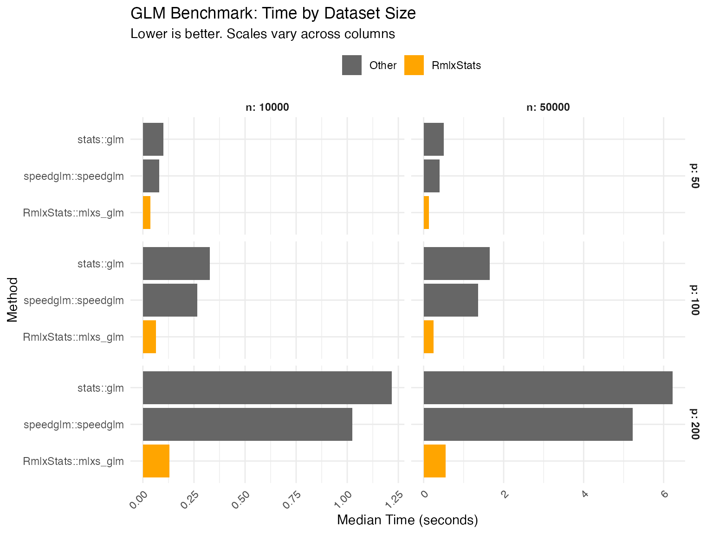
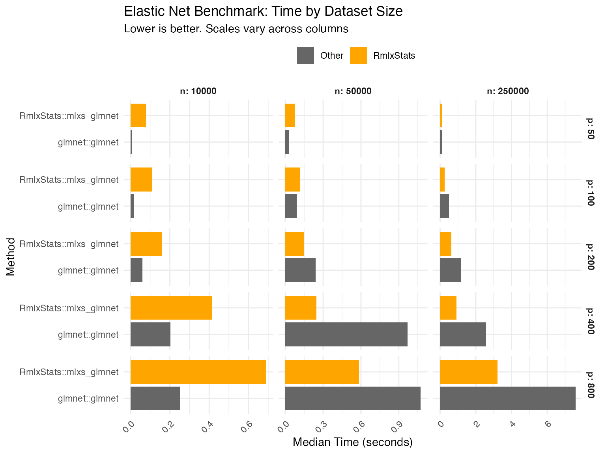
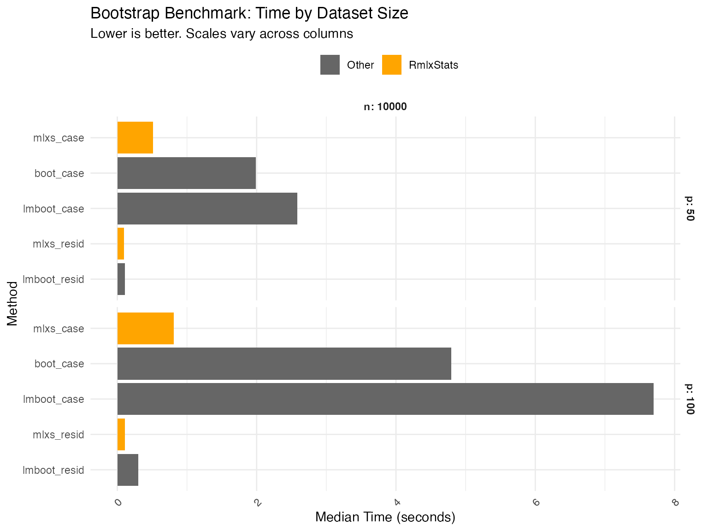

We benchmark RmlxStats against base R and specialized fast fitting
packages, across varying numbers of cases (n) and
predictors (p).
Benchmarking was run on an M2 Macbook Air.
Data Generation
set.seed(20251111)
n_sizes <- c(10000, 50000, 250000)
p_sizes <- c(50, 100, 200, 400, 800)
n_max <- max(n_sizes)
p_max <- max(p_sizes)
X <- matrix(rnorm(n_max * p_max), nrow = n_max, ncol = p_max)
colnames(X) <- paste0("x", seq_len(p_max))
beta_true <- rnorm(p_max, mean = 0, sd = 0.5)
y_continuous <- drop(X %*% beta_true + rnorm(n_max, sd = 2))
# only 1 in 10 predictors matter:
X_sparse <- X[, seq(10, p_max, 10)]
beta_true_sparse <- beta_true[seq(1, p_max, 10)]
y_sparse <- drop(X_sparse %*% beta_true_sparse + rnorm(n_max, sd = 2))
linpred <- drop(X %*% beta_true) / 5
prob <- 1 / (1 + exp(-linpred))
y_binary <- rbinom(n_max, size = 1, prob = prob)
full_data <- data.frame(
y_cont = y_continuous,
y_bin = y_binary,
y_sparse = y_sparse,
X
)
# for fast debugging
if (params$develop) {
p_sizes <- p_sizes/5
n_sizes <- n_sizes/10
}
bench_grid <- expand.grid(
n = n_sizes,
p = p_sizes,
stringsAsFactors = FALSE
)
bench_grid <- bench_grid[bench_grid$n > bench_grid$p, ]
all_results <- data.frame()
lm Benchmarks
lm_results <- list()
lm_grid <- bench_grid[bench_grid$n <= 50000 & bench_grid$p <= 200, ]
for (i in seq_len(nrow(lm_grid))) {
n <- lm_grid$n[i]
p <- lm_grid$p[i]
subset_data <- full_data[1:n, c("y_cont", paste0("x", 1:p))]
formula_str <- paste("y_cont ~", paste(paste0("x", 1:p), collapse = " + "))
lm_formula <- as.formula(formula_str)
bm <- mark(
"stats::lm" = lm(lm_formula, data = subset_data),
"RmlxStats::mlxs_lm" = {
l <- mlxs_lm(lm_formula, data = subset_data)
Rmlx::mlx_eval(l$coefficients)
},
"fixest::feols" = feols(lm_formula, data = subset_data),
"RcppEigen::fastLm" = RcppEigen::fastLm(lm_formula, data = subset_data),
"speedglm::speedlm" = speedglm::speedlm(lm_formula, data = subset_data),
iterations = 3,
check = FALSE,
filter_gc = FALSE
)
bm$n <- n
bm$p <- p
bm$model_type <- "lm"
lm_results[[i]] <- bm
}
lm_df <- do.call(rbind, lm_results)
all_results <- rbind(all_results, lm_df)
glm Benchmarks
glm_results <- list()
glm_grid <- bench_grid[bench_grid$n <= 50000 & bench_grid$p <= 200, ]
for (i in seq_len(nrow(glm_grid))) {
n <- glm_grid$n[i]
p <- glm_grid$p[i]
subset_data <- full_data[1:n, c("y_bin", paste0("x", 1:p))]
formula_str <- paste("y_bin ~", paste(paste0("x", 1:p), collapse = " + "))
glm_formula <- as.formula(formula_str)
bm <- mark(
"stats::glm" = glm(glm_formula, family = binomial(),
data = subset_data,
control = list(maxit = 50)),
"RmlxStats::mlxs_glm" = {
g <- mlxs_glm(glm_formula, family = mlxs_binomial(),
data = subset_data,
control = list(maxit = 50, epsilon = 1e-6))
Rmlx::mlx_eval(g$coefficients)
},
"speedglm::speedglm" = speedglm::speedglm(glm_formula, family = binomial(),
data = subset_data),
iterations = 3,
check = FALSE,
filter_gc = FALSE
)
bm$n <- n
bm$p <- p
bm$model_type <- "glm"
glm_results[[i]] <- bm
}
glm_df <- do.call(rbind, glm_results)
all_results <- rbind(all_results, glm_df)
glmnet Benchmarks
glmnet_results <- list()
glmnet_grid <- bench_grid
for (i in seq_len(nrow(glmnet_grid))) {
n <- glmnet_grid$n[i]
p <- glmnet_grid$p[i]
xvars <- paste0("x", 1:p)
x <- full_data[1:n, xvars]
y <- full_data[1:n, "y_sparse"]
bm <- mark(
"glmnet::glmnet" = glmnet::glmnet(x, y, lambda = 1/1:50),
"RmlxStats::mlxs_glmnet" = mlxs_glmnet(x, y, lambda = 1/1:50),
iterations = 3,
check = FALSE,
filter_gc = FALSE
)
bm$n <- n
bm$p <- p
bm$model_type <- "glmnet"
glmnet_results[[i]] <- bm
}
glmnet_df <- do.call(rbind, glmnet_results)
all_results <- rbind(all_results, glmnet_df)Bootstrap Benchmarks
For bootstrap, we use only the smaller datasets due to computational cost.
boot_results <- list()
boot_grid <- bench_grid[bench_grid$n <= 10000 & bench_grid$p <= 100, ]
for (i in seq_len(nrow(boot_grid))) {
n <- boot_grid$n[i]
p <- boot_grid$p[i]
subset_data <- full_data[1:n, c("y_cont", paste0("x", 1:p))]
formula_str <- paste("y_cont ~", paste(paste0("x", 1:p), collapse = " + "))
boot_formula <- as.formula(formula_str)
fit_mlxs <- mlxs_lm(boot_formula, data = subset_data)
fit_base <- lm(boot_formula, data = subset_data)
# Bootstrap function for boot package
boot_stat <- function(dat, idx) {
coef(lm(boot_formula, data = dat[idx, , drop = FALSE]))
}
bm <- mark(
boot_case = boot::boot(subset_data, statistic = boot_stat,
R = 50L, parallel = "no"),
lmboot_case = lmboot::paired.boot(boot_formula, data = subset_data,
B = 50L),
lmboot_resid = lmboot::residual.boot(boot_formula, data = subset_data,
B = 50L),
mlxs_case = {
s <- summary(fit_mlxs, bootstrap = TRUE,
bootstrap_args = list(B = 50L, seed = 42,
bootstrap_type = "case",
progress = FALSE))
Rmlx::mlx_eval(s$std.err)
},
mlxs_resid = {
s <- summary(fit_mlxs, bootstrap = TRUE,
bootstrap_args = list(B = 50L, seed = 42,
bootstrap_type = "resid",
progress = FALSE))
Rmlx::mlx_eval(s$std.err)
},
iterations = 3,
check = FALSE,
filter_gc = FALSE,
memory = FALSE
)
bm$n <- n
bm$p <- p
bm$model_type <- "Bootstrap"
boot_results[[i]] <- bm
}
boot_df <- do.call(rbind, boot_results)
all_results <- rbind(all_results, boot_df)Summary Tables
We compare functions both against base R implementation, and against the fastest alternative tested.
lm Models
| Method | Median seconds | Relative to base | Relative to best |
|---|---|---|---|
| n = 10000, p = 50 | |||
| fixest::feols | 0.024 | 93.2% | 212.2% |
| RcppEigen::fastLm | 0.015 | 58.5% | 133.2% |
| speedglm::speedlm | 0.022 | 85.4% | 194.4% |
| stats::lm | 0.026 | 100.0% | 227.6% |
| RmlxStats::mlxs_lm | 0.011 | 43.9% | 100.0% |
| n = 50000, p = 50 | |||
| fixest::feols | 0.11 | 88.9% | 222.2% |
| RcppEigen::fastLm | 0.079 | 64.8% | 161.9% |
| speedglm::speedlm | 0.10 | 85.5% | 213.7% |
| stats::lm | 0.12 | 100.0% | 249.9% |
| RmlxStats::mlxs_lm | 0.049 | 40.0% | 100.0% |
| n = 10000, p = 100 | |||
| fixest::feols | 0.081 | 97.0% | 346.0% |
| RcppEigen::fastLm | 0.038 | 46.1% | 164.5% |
| speedglm::speedlm | 0.071 | 85.6% | 305.6% |
| stats::lm | 0.083 | 100.0% | 356.9% |
| RmlxStats::mlxs_lm | 0.023 | 28.0% | 100.0% |
| n = 50000, p = 100 | |||
| fixest::feols | 0.39 | 93.3% | 402.1% |
| RcppEigen::fastLm | 0.21 | 50.4% | 217.4% |
| speedglm::speedlm | 0.35 | 82.6% | 355.9% |
| stats::lm | 0.42 | 100.0% | 431.1% |
| RmlxStats::mlxs_lm | 0.098 | 23.2% | 100.0% |
| n = 10000, p = 200 | |||
| fixest::feols | 0.31 | 101.0% | 663.5% |
| RcppEigen::fastLm | 0.13 | 41.7% | 273.9% |
| speedglm::speedlm | 0.27 | 87.0% | 571.8% |
| stats::lm | 0.30 | 100.0% | 657.0% |
| RmlxStats::mlxs_lm | 0.046 | 15.2% | 100.0% |
| n = 50000, p = 200 | |||
| fixest::feols | 1.5 | 96.5% | 701.2% |
| RcppEigen::fastLm | 0.62 | 40.9% | 297.1% |
| speedglm::speedlm | 1.3 | 83.1% | 603.8% |
| stats::lm | 1.5 | 100.0% | 726.3% |
| RmlxStats::mlxs_lm | 0.21 | 13.8% | 100.0% |
| Base is base R implementation in 'stats' or 'boot' packages. | |||

glm Models
| Method | Median seconds | Relative to base | Relative to best |
|---|---|---|---|
| n = 10000, p = 50 | |||
| speedglm::speedglm | 0.079 | 78.4% | 211.3% |
| stats::glm | 0.10 | 100.0% | 269.4% |
| RmlxStats::mlxs_glm | 0.037 | 37.1% | 100.0% |
| n = 50000, p = 50 | |||
| speedglm::speedglm | 0.40 | 78.8% | 310.3% |
| stats::glm | 0.50 | 100.0% | 393.9% |
| RmlxStats::mlxs_glm | 0.13 | 25.4% | 100.0% |
| n = 10000, p = 100 | |||
| speedglm::speedglm | 0.27 | 81.3% | 416.0% |
| stats::glm | 0.33 | 100.0% | 511.6% |
| RmlxStats::mlxs_glm | 0.064 | 19.5% | 100.0% |
| n = 50000, p = 100 | |||
| speedglm::speedglm | 1.4 | 82.4% | 536.4% |
| stats::glm | 1.6 | 100.0% | 650.7% |
| RmlxStats::mlxs_glm | 0.25 | 15.4% | 100.0% |
| n = 10000, p = 200 | |||
| speedglm::speedglm | 1.0 | 84.1% | 785.2% |
| stats::glm | 1.2 | 100.0% | 933.2% |
| RmlxStats::mlxs_glm | 0.13 | 10.7% | 100.0% |
| n = 50000, p = 200 | |||
| speedglm::speedglm | 5.2 | 83.9% | 945.7% |
| stats::glm | 6.2 | 100.0% | 1127.6% |
| RmlxStats::mlxs_glm | 0.55 | 8.9% | 100.0% |
| Base is base R implementation in 'stats' or 'boot' packages. | |||

glmnet Models
| Method | Median seconds | Relative to base | Relative to best |
|---|---|---|---|
| n = 10000, p = 50 | |||
| glmnet::glmnet | 0.0066 | 100.0% | |
| RmlxStats::mlxs_glmnet | 0.079 | 1212.3% | |
| n = 50000, p = 50 | |||
| glmnet::glmnet | 0.031 | 100.0% | |
| RmlxStats::mlxs_glmnet | 0.075 | 239.2% | |
| n = 250000, p = 50 | |||
| glmnet::glmnet | 0.13 | 100.8% | |
| RmlxStats::mlxs_glmnet | 0.13 | 100.0% | |
| n = 10000, p = 100 | |||
| glmnet::glmnet | 0.018 | 100.0% | |
| RmlxStats::mlxs_glmnet | 0.11 | 596.7% | |
| n = 50000, p = 100 | |||
| glmnet::glmnet | 0.091 | 100.0% | |
| RmlxStats::mlxs_glmnet | 0.11 | 125.5% | |
| n = 250000, p = 100 | |||
| glmnet::glmnet | 0.50 | 191.0% | |
| RmlxStats::mlxs_glmnet | 0.26 | 100.0% | |
| n = 10000, p = 200 | |||
| glmnet::glmnet | 0.060 | 100.0% | |
| RmlxStats::mlxs_glmnet | 0.16 | 267.2% | |
| n = 50000, p = 200 | |||
| glmnet::glmnet | 0.24 | 158.4% | |
| RmlxStats::mlxs_glmnet | 0.15 | 100.0% | |
| n = 250000, p = 200 | |||
| glmnet::glmnet | 1.2 | 187.7% | |
| RmlxStats::mlxs_glmnet | 0.62 | 100.0% | |
| n = 10000, p = 400 | |||
| glmnet::glmnet | 0.20 | 100.0% | |
| RmlxStats::mlxs_glmnet | 0.42 | 205.5% | |
| n = 50000, p = 400 | |||
| glmnet::glmnet | 0.97 | 394.3% | |
| RmlxStats::mlxs_glmnet | 0.25 | 100.0% | |
| n = 250000, p = 400 | |||
| glmnet::glmnet | 2.6 | 277.1% | |
| RmlxStats::mlxs_glmnet | 0.93 | 100.0% | |
| n = 10000, p = 800 | |||
| glmnet::glmnet | 0.25 | 100.0% | |
| RmlxStats::mlxs_glmnet | 0.69 | 275.1% | |
| n = 50000, p = 800 | |||
| glmnet::glmnet | 1.1 | 184.1% | |
| RmlxStats::mlxs_glmnet | 0.58 | 100.0% | |
| n = 250000, p = 800 | |||
| glmnet::glmnet | 7.6 | 236.4% | |
| RmlxStats::mlxs_glmnet | 3.2 | 100.0% | |
| Base is base R implementation in 'stats' or 'boot' packages. | |||

Bootstraps
| Method | Median seconds | Relative to base | Relative to best |
|---|---|---|---|
| n = 10000, p = 50 | |||
| boot_case | 2.0 | 2023.5% | |
| lmboot_case | 2.6 | 2632.5% | |
| lmboot_resid | 0.11 | 111.9% | |
| mlxs_case | 0.51 | 519.0% | |
| mlxs_resid | 0.098 | 100.0% | |
| n = 10000, p = 100 | |||
| boot_case | 4.8 | 4512.4% | |
| lmboot_case | 7.7 | 7247.8% | |
| lmboot_resid | 0.30 | 283.8% | |
| mlxs_case | 0.81 | 765.1% | |
| mlxs_resid | 0.11 | 100.0% | |
| Base is base R implementation in 'stats' or 'boot' packages. | |||
